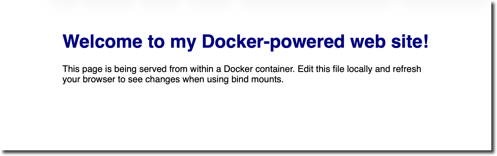
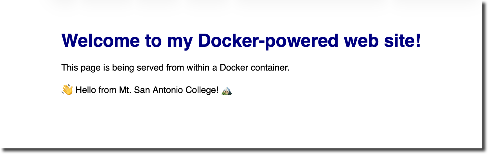
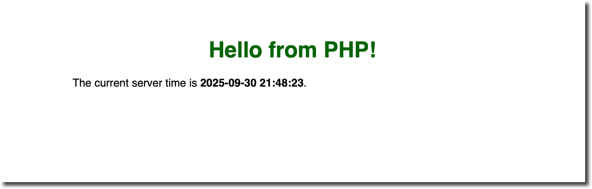
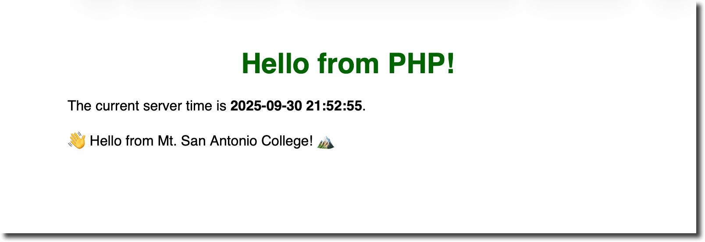

This tutorial introduces Docker as a flexible development tool. You will learn how to run a basic static web server in a container, add PHP support on top of it, and use bind mounts to edit files locally while the container is running. Each step is broken down with explanations, commands and sample files.
php:apache image.localhost.Tools Needed
Docker is a containerization platform. A Docker image is like a blueprint or class: it defines everything needed (code, runtime, libraries) to run an application. Images are immutable and ensure that the same environment runs on every machine. A container is the running instance of an image; you can start, stop, or delete containers using the Docker CLI. Containers are isolated from each other and the host, so you must explicitly expose ports to access services.
Create a working folder called docker‑webserver.
Inside this folder make a site-content directory for
your website files. Then create a simple index.html
page in site-content with some placeholder content.
<!-- docker‑webserver/site-content/index.html -->
<!DOCTYPE html>
<html lang="en">
<head>
<meta charset="UTF-8">
<title>Docker Web Server</title>
<style>
body { font-family: sans-serif; max-width: 640px; margin: 0 auto; padding: 2rem; }
h1 { color: navy; text-align: center; }
</style>
</head>
<body>
<h1>Welcome to my Docker‑powered web site!</h1>
<p>This page is being served from within a Docker container. Edit this file locally and refresh your browser to see changes when using bind mounts.</p>
</body>
</html>To run a web server we need an image. We will use the lightweight
Nginx image (nginx:1‑alpine) from
Docker Hub. Create a file named Dockerfile in
docker‑webserver with the following contents:
# docker‑webserver/Dockerfile
# Use the official Nginx image as a base. The `alpine` tag reduces size.
FROM nginx:1-alpine
# Copy the website files into the Nginx document root
COPY site-content/ /usr/share/nginx/html
# Expose port 80 (the default Nginx port)
EXPOSE 80
CMD ["nginx", "-g", "daemon off;"]Explanation:
FROM nginx:1-alpine tells Docker to start from the
official Nginx image. The 1-alpine variant is small and
includes an Alpine Linux base.COPY site-content/ /usr/share/nginx/html copies
your local site-content folder into the container’s
default document root. When Nginx starts, it will serve the HTML
page we created.EXPOSE 80 declares that the container listens on
port 80, but it doesn’t publish it. We will publish a host port when
we run the container.Open a terminal and navigate to the docker‑webserver
directory. Run the following command to build the image and tag it
as simple-webserver:
docker build -t simple-webserver .After the build completes, run a container in detached mode (background) and map your host’s port 8080 to the container’s port 80:
docker run -d --name simple-webserver -p 8080:80 simple-webserverThe -p 8080:80 option publishes port 80 inside the
container to port 8080 on the host. Without publishing a port, the
service is inaccessible from the host due to container isolation.
Open a browser and navigate to http://localhost:8080 –
you should see your welcome page.

To stop and remove the container when you’re done, run:
docker rm -f simple-webserverRebuilding the image every time you change a file is inefficient during development. Instead, use a bind mount to share your project directory with the container. Bind mounts let the container see file changes immediately.
From inside docker‑webserver run the following
command:
docker run -d --name dev-webserver -p 8080:80 \
--mount type=bind,src="$(pwd)/site-content",target=/usr/share/nginx/html \
nginx:1-alpineThis command mounts your local site-content
directory into the container’s document root. Now whenever you edit
index.html, refreshing the browser will show your
changes instantly. When you’re finished, remove the container with
docker rm -f dev-webserver.

Docker supports two types of mounts: bind mounts and volumes. A bind mount shares a specific host directory with the container; you decide the host path, and changes propagate in both directions. Volumes are managed by Docker and live outside the host filesystem, which is useful for storing persistent data but not ideal for editing source code. In development scenarios, bind mounts provide a fast feedback loop.
Static pages are limiting; let’s extend the container to process
PHP scripts. The official php:apache
image includes PHP and the Apache HTTP Server, allowing you
to serve dynamic pages out of the box. The Docker guide notes that
you can containerize a PHP application and serve it via Apache.
We’ll create a new php-webserver image based on
this.
Create a project folder. Inside
docker‑webserver create php-site and place
an index.php file inside:
<!-- docker‑webserver/php-site/index.php -->
<?php
$currentTime = date('Y-m-d H:i:s');
?>
<!DOCTYPE html>
<html lang="en">
<head>
<meta charset="UTF-8">
<title>Docker PHP Server</title>
<style>
body { font-family: sans-serif; max-width: 640px; margin: 0 auto; padding: 2rem; }
h1 { color: darkgreen; text-align: center; }
</style>
</head>
<body>
<h1>Hello from PHP!</h1>
<p>The current server time is <strong><?php echo $currentTime; ?></strong>.</p>
</body>
</html>Write a PHP Dockerfile. In
docker‑webserver create a Dockerfile.php
with the following contents:
# docker‑webserver/Dockerfile.php
# Use the official PHP image that bundles Apache
FROM php:8.2-apache
# Copy the PHP site into Apache's document root
COPY php-site/ /var/www/html/
# Enable any PHP extensions you need; for example, mysqli or pdo_mysql
RUN docker-php-ext-install pdo pdo_mysql
EXPOSE 80
CMD ["apache2-foreground"]The php:8.2-apache image combines a Debian base,
Apache web server and PHP 8.2. The Docker guide’s
docker init workflow selects “PHP with
Apache” and version 8.2, which is exactly what we are using.
The RUN docker-php-ext-install line demonstrates how to
enable additional PHP extensions if your project needs a database
driver; you can remove it for a simple site.
Build and run the PHP container. Build the new image and run it on port 8081:
docker build -t php-webserver -f Dockerfile.php .
docker run -d --name php-webserver -p 8081:80 php-webserverVisit the PHP site. Open your browser to
http://localhost:8081/index.php. You should see “Hello
from PHP!” and the current time. To stop the container, run
docker rm -f php-webserver.

You can mount your php-site directory into the PHP
container using a bind mount to see changes instantly:
docker run -d --name php-dev -p 8081:80 \
--mount type=bind,src="$(pwd)/php-site",target=/var/www/html \
php:8.2-apacheThis command uses the official php:8.2-apache image
directly and mounts the local php-site folder into
/var/www/html. Edit index.php and refresh
the browser to see updates.

For multi‑service applications you can use
Docker Compose. Compose lets you define services,
networks and volumes in a single YAML file and bring them up with
one command. In the Nginx example earlier, a Compose file defined a
service, selected the nginx:1‑alpine image, mapped
ports and mounted a directory. Compose files also support multiple
services and dependencies (for example, Nginx plus a backend
API).
To adapt our PHP example to Compose, create a
docker-compose.yml:
version: '3.8'
services:
php:
image: php:8.2-apache
ports:
- '8082:80'
volumes:
- ./php-site:/var/www/htmlThen run docker compose up -d to start the service
and docker compose down to stop it. Compose
automatically handles port mapping and mount configuration, making
it easier to manage complex setups.
In this tutorial you built a static website with Docker, learned the difference between images and containers, used bind mounts for live development, and extended the environment to serve PHP files. With these skills you can start containerizing your own web projects and confidently evolve them using Docker’s flexible toolset.